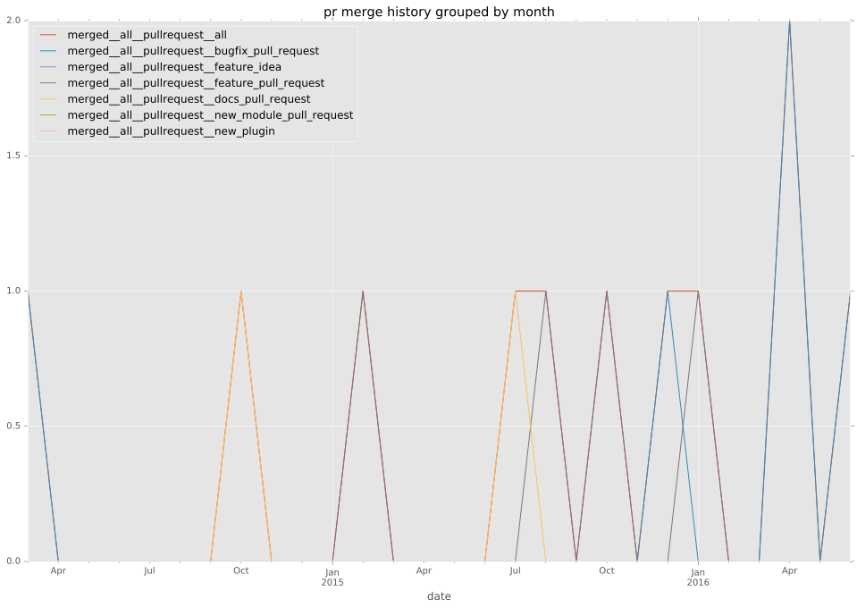

authors
- franckcuny
maintainers
- franckcuny
contributors
- franckcuny : 16 commits
- bcoca : 10 commits
- ikari7789 : 8 commits
- andskli : 7 commits
- mpdehaan : 6 commits
- mscherer : 5 commits
- marcusramberg : 5 commits
- jctanner : 5 commits
- yteraoka : 3 commits
- stoned : 1 commits
- offby1 : 1 commits
total issue counts
feature pull request: 4
docs report: 2
pullrequest: 17
docs pull request: 3
bugfix pull request: 10
feature idea: 2
issue: 8
bug report: 4
issue history
pullrequest history

days open by issue type
bugfix pull request
count: 15
std: 158.509666222
min: 0
max: 460
median: 11.0
mean: 70.2
all
count: 34
std: 111.155220597
min: 0
max: 460
median: 10.0
mean: 57.1764705882
pullrequest
count: 0
std: nan
min: nan
max: nan
median: nan
mean: nan
docs pull request
count: 5
std: 5.17687164222
min: 0
max: 10
median: 8.0
mean: 5.6
docs report
count: 2
std: 98.9949493661
min: 0
max: 140
median: 70.0
mean: 70.0
feature pull request
count: 8
std: 52.3088356371
min: 5
max: 122
median: 43.0
mean: 53.25
feature idea
count: 1
std: nan
min: 134
max: 134
median: 134.0
mean: 134.0
issue
count: 0
std: nan
min: nan
max: nan
median: nan
mean: nan
bug report
count: 3
std: 48.4389650316
min: 0
max: 93
median: 70.0
mean: 54.3333333333
closures grouped by total days open